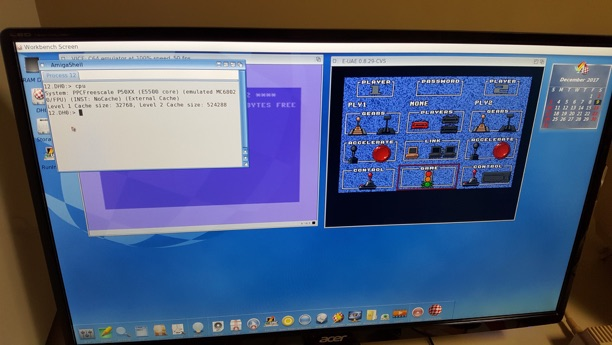
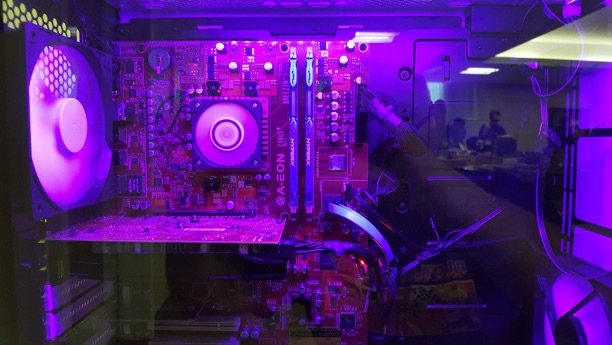

The Computer Hipster - Part 2 - AmigaOS
Monday, December 11, 2017
In my previous blog post, I explored the notion of computer hipsterism, and how it is alive and well today among the SGI/IRIX community. In this blog post, I’m going to examine the other major computer hipster crowd: the Commodore Amiga community.
Unlike the SGI/IRIX hipster community, the Commodore Amiga hipster community is much older and different in nature. The main reason for this is because Commodore achieved its fame in the 1970s and 1980s. Commodore was a household name in the 1980s because they were the most common personal computer (PC) on the market - it was more powerful, had more software/games, and cost much less than other PCs at the time. In fact, the Commodore 64 computer from 1982 still retains the distinction of being the #1 selling computer of all time. Most people from my generation who wound up in technology-related fields cite Commodore as their first love - the computer that got them interested in technology. Commodore was cool.
The Commodore Amiga was the last computer line made by Commodore. The first Amiga model appeared in 1985, and the Commodore Amiga enjoyed a small but loyal following. The hardware of the Amiga was nothing revolutionary - it used the same Motorola 68000 CPU that Apple Macintosh computers ran, but the AmigaOS operating system wasn’t attractive or easy to use. What made Amiga cool in the late 1980s was its great library of games and graphics software (desktop publishing, special effects for television, etc.).
I had friends who were Amiga nuts, but nothing they showed me on the Amiga particularly impressed me at the time, since I owned an IBM-compatible PC with an Intel 386 processor that could do far more than the Amiga could. In fact, it was the plethora of Intel processor PCs on the market that forced Commodore and nearly all other PC manufacturers to fade into the sunset by the early 1990s in North America (Commodore still had a loyal following in Europe until the mid 1990s).
So what started the Commodore Amiga hipster community? Technically.....nothing. The Commodore Amiga community persisted even after Commodore’s demise in 1994. These die-hard Amiga users kept using their Amiga computers well into the late 1990s because it was both cool and uncommon (the two pillars of a hipster community). There are still active Commodore User Groups around the world where people meet to share software and demonstrate cool new things they’ve done with their Commodore computers.
The biggest problem that plagued Amiga users by the late 1990s was that the original Amiga hardware was too old and underpowered to perform useful tasks such as running a Web browser. A German company called Haage & Partner tried making an updated version of AmigaOS in 1999 that ran on newer Amiga computers with Motorola 68020 CPUs, but the real problem was that you couldn’t really make old Amiga hardware fast enough to be useful. So, in the early 2000s, Hyperion Entertainment released a new version of AmigaOS that ran on PowerPC CPUs, which were definitely powerful enough to run modern apps.
By updating AmigaOS to run on more modern PowerPC hardware, Hyperion Entertainment infused life into the Commodore Amiga hipster community - now you could run AmigaOS, and do useful things with it, such as install open source software (e.g. Firefox), create custom apps, etc.
The pictures below are from this month’s World of Commodore event in Mississauga, Canada. One of the booths has a PC with the latest version of AmigaOS (4.1) running on an A-EON AmigaOne X5000/20 motherboard with a Freescale P5020 2.0 GHz dual-core PowerPC CPU at a cost of over $2000:



So for $2000, you can own an uncommon PowerPC computer that runs the *now* cool but extremely uncommon AmigaOS. If that doesn’t make you a computer hipster, I don’t know what will.....;-)
In summary, there are some interesting differences, as well as some interesting similarities regarding the SGI/IRIX and Commodore Amiga computer hipster communities:
-
•The Commodore Amiga hipster community is much older than the SGI/IRIX hipster community. This is because the Commodore Amiga was popular in the 1980s, whereas SGI computers were popular in the 1990s.
-
•The SGI/IRIX hipster community gained traction when used SGI computers became easy/cheap to find after 2000 - this enticed those who always wanted (but couldn’t afford) an SGI computer in the 1990s to enter the hobby. Alternatively, the Commodore Amiga hipster community was primarily formed by Amiga users that didn’t want to switch to a different platform.
-
•Both communities tinker with their operating systems today, and install open source software that make it useful. However, the SGI/IRIX hipster community run their OS and software on original SGI hardware (which is quite powerful still), whereas the Commodore Amiga hipster community run their OS and software on newer PowerPC-based hardware (since the original Amiga hardware is too old).
-
•Both communities like the idea that they are doing something cool and uncommon (the hipster philosophy). However, the SGI/IRIX hipster community typically communicates online (via NekoChan), whereas the Commodore Amiga community often communicates via Commodore User Group meet-ups in various cities around the world.